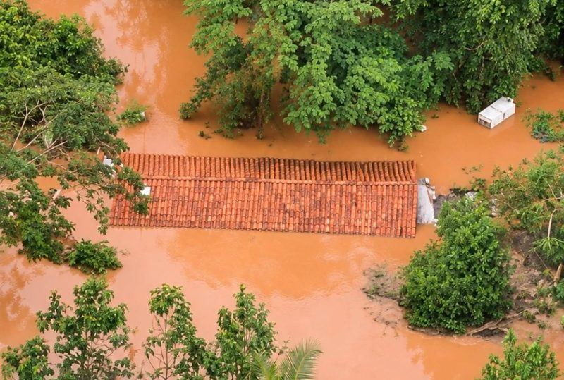
Busca
Resultados da sua pesquisa no portal.
33 publicações
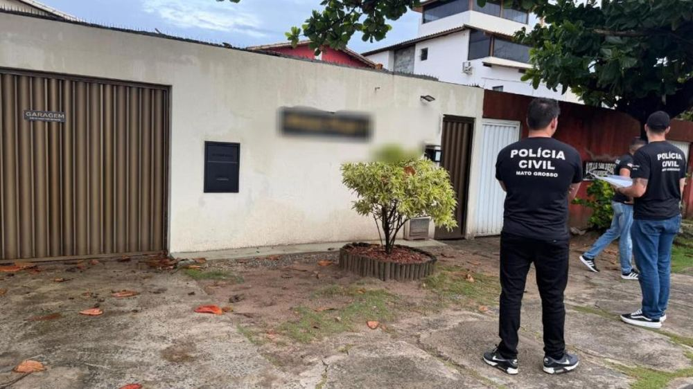
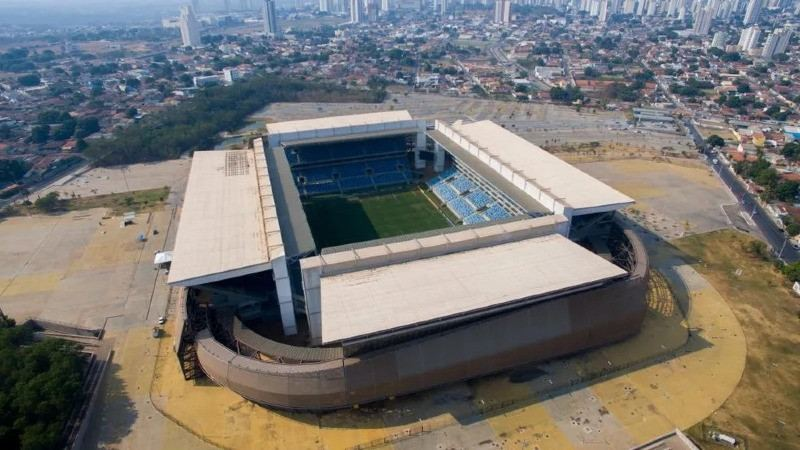
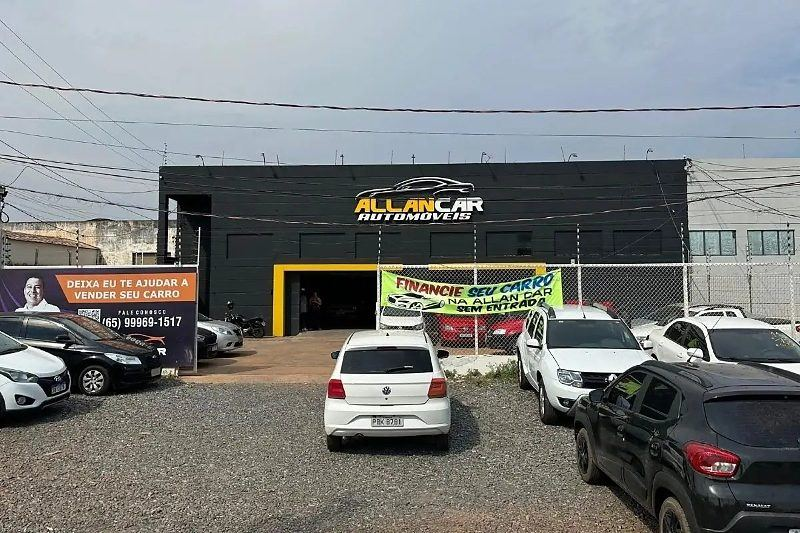
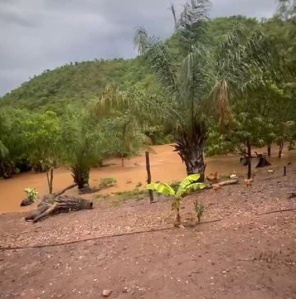
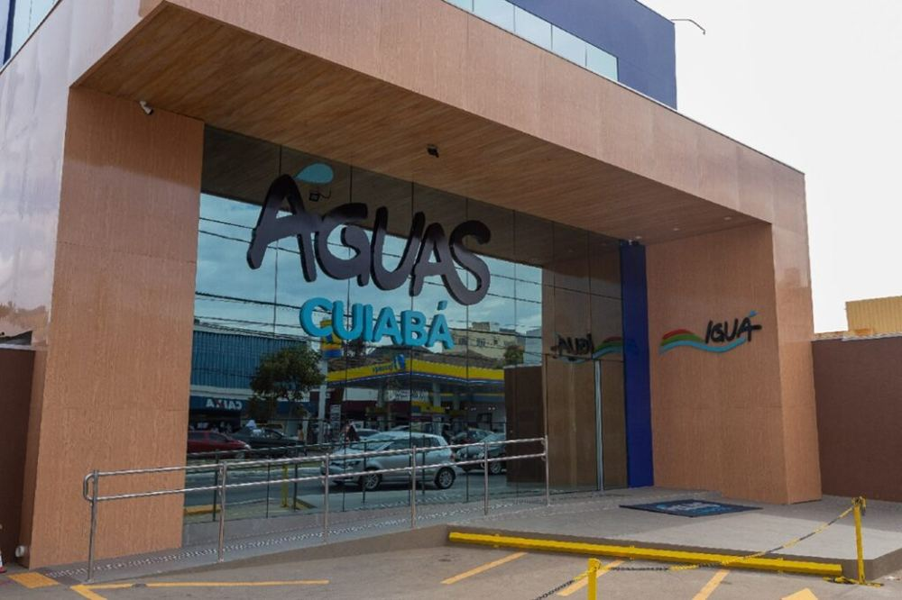
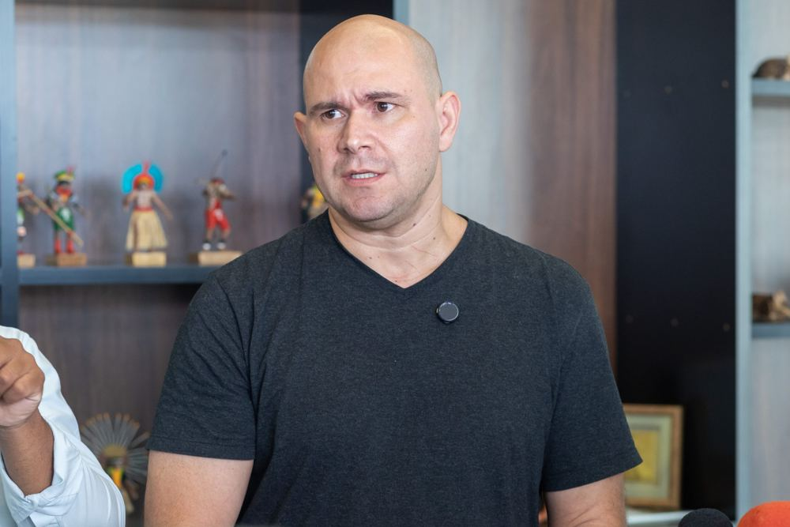
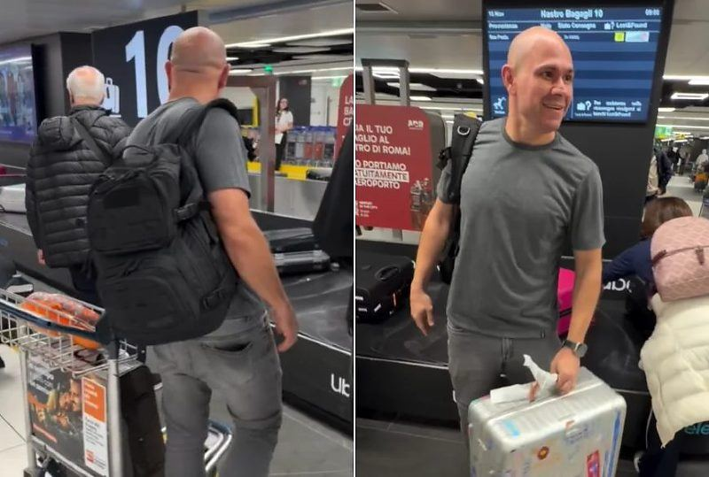
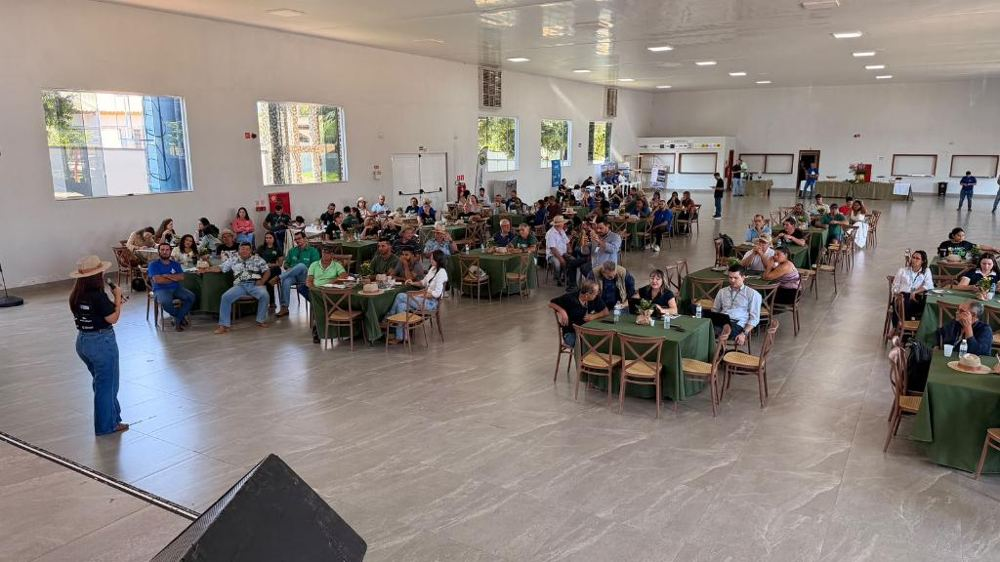
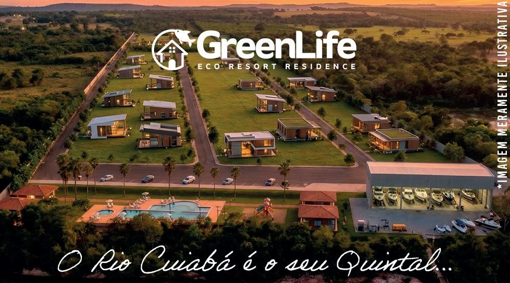
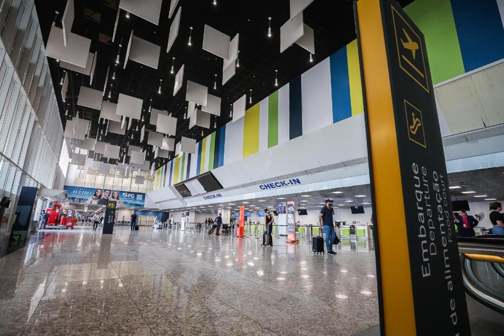
Economia & Negócios
Mato Grosso amplia conexão aérea com nova rota da Azul para São Paulo
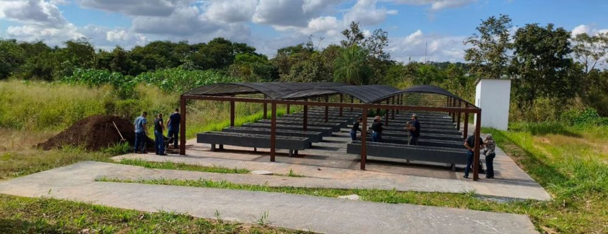
Economia & Negócios
Compostagem transforma resíduos do saneamento em fertilizante em Cuiabá
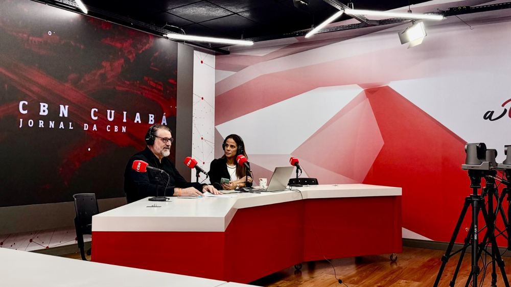
Economia & Negócios
Reconhecimento internacional do Lago Di Vino é destaque na CBN Cuiabá
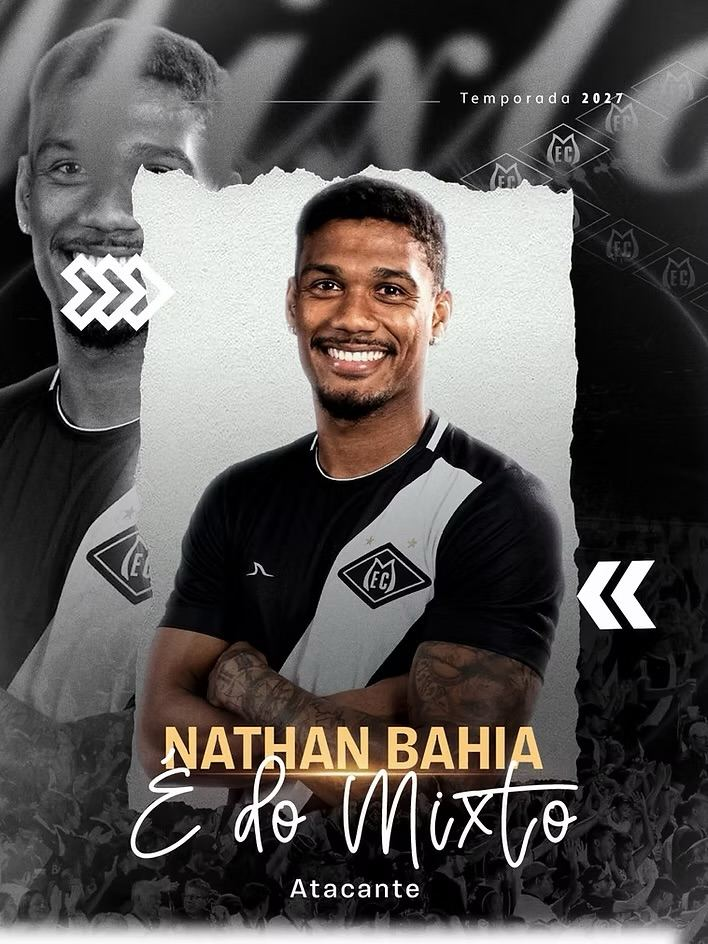
Esporte & Cultura
Mixto anuncia Natan Bahia para reforçar ataque em 2027
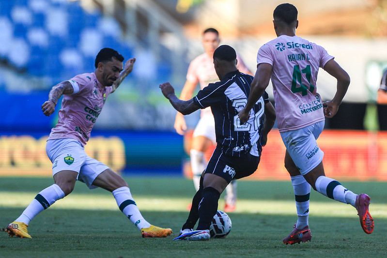
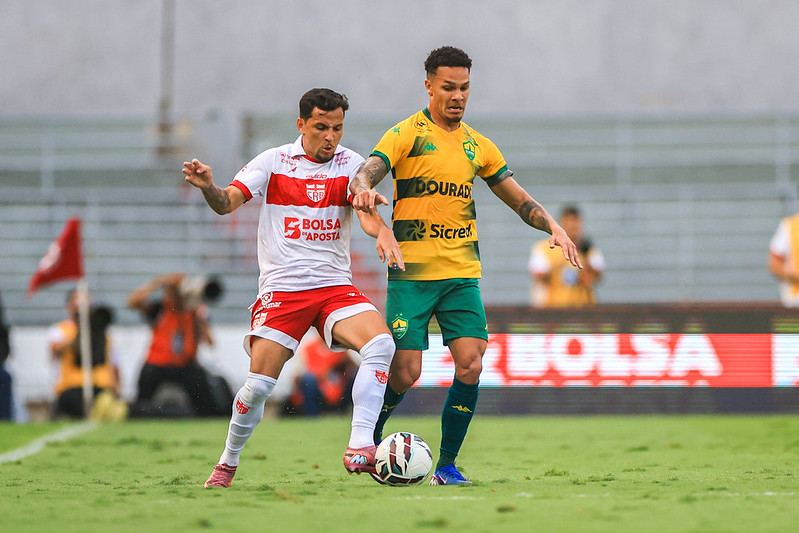
Esporte & Cultura
Cuiabá é dominado pelo CRB no Rei Pelé e se distancia do G6
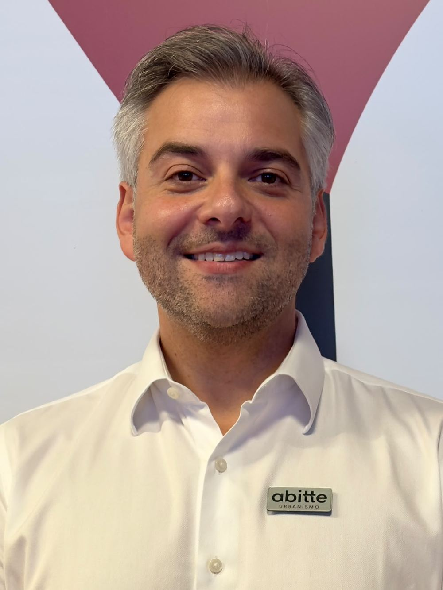
Nenhum resultado encontrado
Confira a grafia ou tente palavras mais gerais.
Voltar para a página inicial